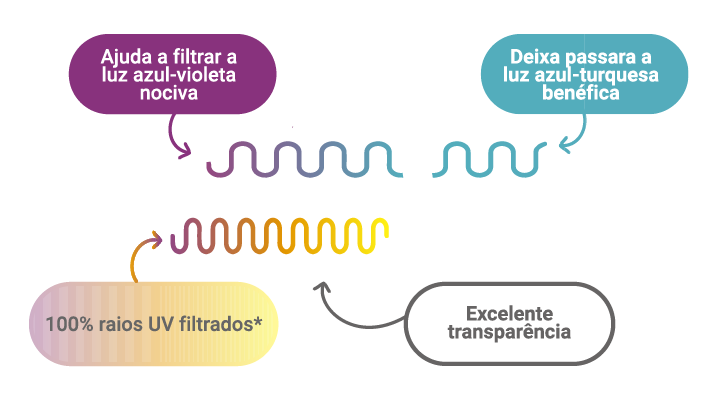
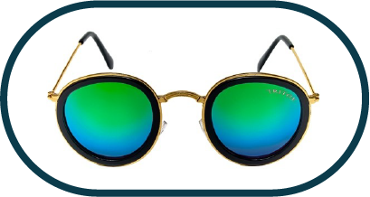
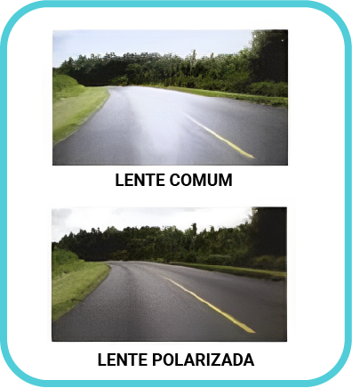

Tratamentos ópticos são processos pelos quais se submetem as lentes oftálmicas a fim de melhorar sua condição inicial, agregando benefícios adicionais ao produto.
Os tratamentos podem ser indicados pelo especialista que prescreve a receita, pelo técnico em óptica que atende o cliente ou, ainda, por escolha do próprio cliente, de acordo com sua rotina e necessidade de uso.
É de grande importância o técnico perito ter conhecimento de todos os tratamentos existentes para poder identificar cada um e saber a compatibilidade deles com as lentes oftálmicas. Quando houver a construção de um laudo por motivo de ausência de proteção das lentes, por exemplo, será necessária essa discriminação no laudo.
UVA
Pode causar o envelhecimento precoce da pele das pálpebras e é o grande causador de patologias, por exemplo, a catarata.
UVB
Pode ser absorvido pela córnea e/ou pelo cristalino e a exposição por tempo prolongado pode causar câncer.
É imprescindível que todas as lentes oftálmicas venham com essas proteções, visando a saúde e o conforto visual ao usuário.

Figura 1 – Tratamento Blue UV Filter Essilor
Fonte: adaptado de Varilux (c2023)
Figura de uma lente oftálmica demonstrando sua proteção contra luz nociva e raios UV, além de sua transparência e transmissibilidade de luz benéfica.
Este tratamento tem como benefício estética, proteção e conforto visual. Todo laboratório óptico tem um departamento específico para esse tipo de serviço, que é muito complexo e exige muita perícia do operador, pois inúmeras variáveis influem nesse processo, interferindo no resultado final.
As variáveis são: material da lente, temperatura, qualidade do corante, densidade da cor, pH da água utilizada com o corante; equipamento utilizado e cor escolhida (conforme amostra) fornecida pelo cliente.
Conforme o material da lente, a coloração age de forma diferente. No material orgânico, em razão da sua composição, a coloração atua de forma mais efetiva, colorindo o material com muita facilidade. A temperatura do aparelho destinado ao tratamento é de extrema importância e deve ser monitorada constantemente.
Podem ser coloridas as lentes de resina acabadas sem tratamento, as de policarbonato fabricadas e as de outros índices que tenham recebido coating (verniz) compatível com coloração.
No entanto, não podem ser coloridas as lentes acabadas com AR, as lentes fotossensíveis e as lentes polarizadas.
As lentes orgânicas de alto índice e as de policarbonatos só colorem se antes for aplicado um verniz “coating”.
A possibilidade de cores é muito variada. Sua função varia entre atender à moda (linha de cores fashion) e atender a situações convencionais de conforto e proteção.
Figura 2– Óculos para proteção solar
Fonte: Cavalcante (2009)
Imagem de quatro óculos, para proteção solar, com armações e lentes em várias cores.
As lentes metalizadas, também conhecidas como espelhadas, são caracterizadas por uma superfície externa da lente com aspecto de espelho que reflete luz.
Sua forma de aplicação é no ato de fusão. Essas lentes adquirem a propriedade de cor por intermédio do uso de produtos químicos selecionados para essa finalidade. Consiste em depositar camadas de compostos metálicos que se ligarão à lente e farão o efeito de cor.
As lentes são aquecidas até uma temperatura média de 250°, e o revestimento é aplicado em uma câmara a vácuo, por evaporação de materiais especiais:
Esses revestimentos podem ser constituídos por uma única camada ou por várias camadas finas sobrepostas alternando os materiais. A intensidade da metalização (tom) é determinada pela espessura da camada aplicada, e a cor pelos materiais utilizados.

Figura 3 – Lentes metalizadas
Fonte: Guaresemin (2016)
Imagem de óculos com armação dourada e aros revestidos de preto. Nos aros estão inseridas lentes de formato redondo e metalizadas em dégradé, verde na parte superior e azul na parte inferior.
A polarização se dá quando o feixe de luz é refletido por uma superfície polida e a vibração desse reflexo desloca-se no sentido da superfície causando ofuscamento da visão. O efeito que a lente polarizada produz é o de cancelar o brilho emitido por tais superfícies refletoras.
As lentes solares polarizadas, além do benefício de proteção à luminosidade, proporcionam conforto visual e proteção 100% da radiação ultravioleta. São produzidas pela utilização de um composto químico (filme polarizador) que alinha naturalmente as moléculas em paralelo umas das outras. Esse filme polarizado pode revestir, laminar ou ser intercalado em lentes oftálmicas, criando cores uniformes. O polarizador é um filtro que só permite a passagem de luz polarizada em uma direção específica. Permite retirar reflexos e ver naturalmente a imagem. A utilização desses filtros tem de obedecer às normas da ABNT (Associação Brasileira de Normas Técnicas).

Figura 4 – Comparativo entre lentes comuns e polarizadas
Fonte: QÓculos ([s.d.])
Duas imagens, uma representando a vista através de uma lente comum e outra vista através de um lente polarizada.A imagem vista através da lente polarizada é mais nítida, sem brilho e ofuscamento.
O principal benefício do tratamento antirreflexo (AR) é amenizar os efeitos da luz refletida. Consiste na aplicação de uma camada de um material à superfície da lente com um índice de refração adequado em relação ao da lente, de forma que as ondas eletromagnéticas, ao refletirem sobre a camada e na interfase camada/lente, estejam em oposição de fase, anulando-se pela interferência destrutiva. Isso ocorre se a camada aplicada à lente for fina e resistente feita de um material com índice de refração intermediário entre o ar e a lente.
Figura 5 – Comparação: tratamento com e sem antirreflexo
Fonte: Lenscope (2017)
Mulher com cabelos e olhos castanhos utilizando óculos com armação em acetato na cor preta, demonstrando comparação da lente do seu olho direito sem tratamento antirreflexo, que apresenta reflexo de luz impedindo a transparência da lente, e da lente do seu olho esquerdo com tratamento antirreflexo, com a lente totalmente transparente, permitindo a visibilidade de seu olho.
O método adotado para se obter a configuração desejada segue os seguintes itens:
A tecnologia utilizada que mais satisfaz é a evaporação a vácuo, pois:
Foi constatado que o campo visual de uma pessoa que esteja usando lentes com tratamento AR é superior ao de uma pessoa que não esteja usando.
Também foi constatado que as lentes com tratamento AR reduzem em dois a cinco segundos o tempo necessário para uma pessoa que estiver dirigindo um veículo volte a ter uma visão normal, após um ofuscamento.
Além dos citados, existem outros tipos de tratamentos de endurecimento, antiabrasivo, hidrorrepelente, filtro de luz azul e filtro medicinal.
As lentes devem ser limpas preferencialmente com água em temperatura ambiente e com detergente líquido neutro. A limpeza adequada das lentes garante uma visão melhor, bem como uma vida útil maior.
Nas lentes solares acabadas:
Nas lentes coloridas:
Nas lentes polarizadas:
Nas lentes com AR:
Em óptica, assim como em outras áreas, os tratamentos estão disponíveis para trazer benefícios adicionais ao produto, desde que ofereçam soluções adequadas ao uso diário de quem o utiliza.
Cabe ao perito ter conhecimento sobre os tratamentos de lentes oftálmicas, assim como estar ciente dos seus possíveis ocorrentes de não conformidades, para a construção do laudo técnico, a fim de identificar a causa do problema e a solução para o caso.